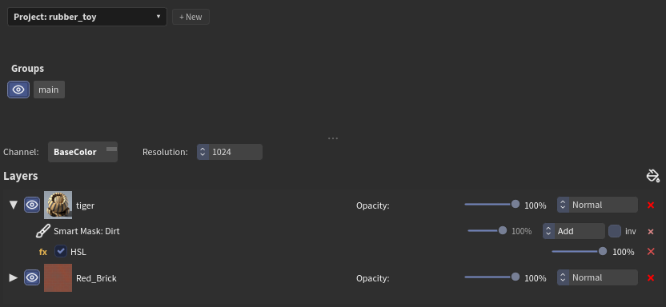
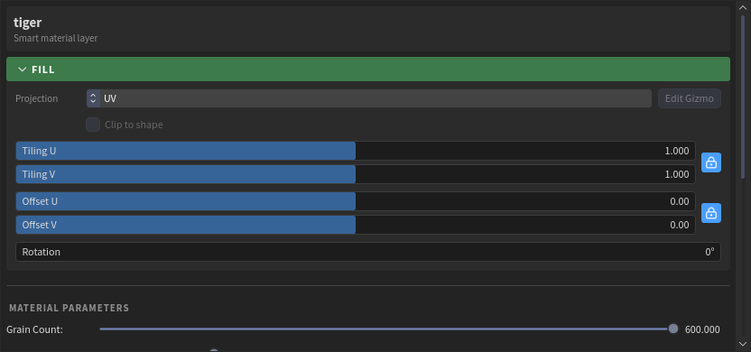
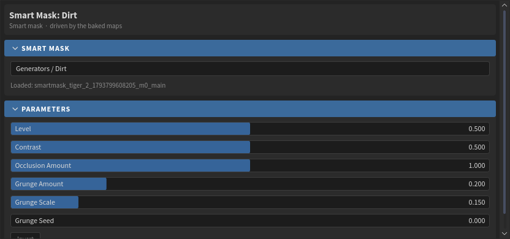
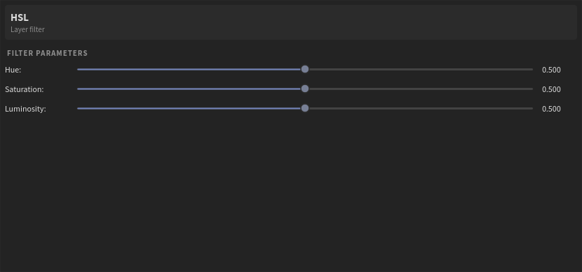
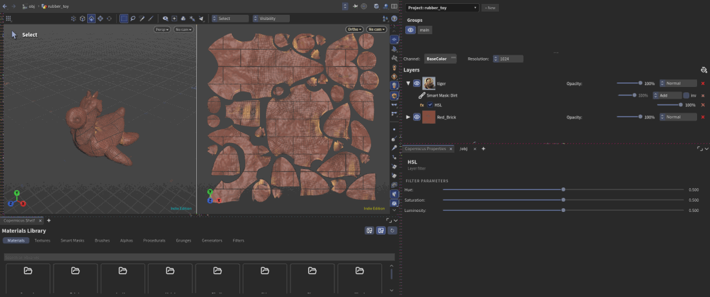

Layers, masks and filters¶
The layer stack¶

Layers stack like in Substance Painter: the top layer covers the ones below. Each row has:
- the arrow, which shows the layer's masks and filters;
- the eye, to hide it;
- its icon and name (double-click to rename);
- Opacity and the blend mode (Normal, Add, Subtract, Multiply, Screen, Overlay);
- delete (the red cross).
Drag rows to reorder them. Right-click a layer for Duplicate Layer and Add Mask.
At the top of the panel:
- Groups: the texture sets of the project. Each has its own stack; the eye hides it in the viewer.
- Channel: which channel the viewer shows (BaseColor, Roughness, Normal...).
- Resolution: the project's texture size.
Properties¶
Click a layer, a mask or a filter: its controls show in Properties.

For a layer:
- Fill: how it's put on the model.
- Projection: UV, or Planar, Triplanar, Cylinder, Spherical with a gizmo in the viewer (Edit Gizmo). Clip to shape limits it to the gizmo.
- Tiling, Offset and Rotation. The lock keeps U and V together.
- Material: which channels the layer writes (click to turn one off) and their values.
- The material's own controls: colours, patterns, wear, grain... whatever its maker put on it.
Masks¶
A mask says where its layer shows: white shows the layer, black hides it. Masks stack like layers. The first starts from black, each one goes on top with its own blend mode and opacity, and inv inverts one. Several masks add up the way their blend modes say.
Ways to add a mask:
- From the shelf: drag a Generator, a Grunge or a Procedural onto a layer.
- Right-click the layer > Add Mask:
- Paint Mask: paint it (Painting).
- Fill (White), Fill (Black): the whole layer, or none of it, to paint into.
- Procedural Generators > Smart Mask / Grunge: then pick one in Properties.
- Mesh Fill: whole UV islands or connected pieces; Select Islands in Properties, click them in the viewer (3D or 2D), Enter when done.
Generators¶
Generators make masks from the baked maps, like Substance Painter's: Dirt, Edge Wear, Curvature, Ambient Occlusion, Cavity, Thickness, Light, Position Gradient, 3D Linear Gradient, World Space Normals, UV Border Distance, Mask Builder and more. They need the bake (see Bake). Each has its controls in Properties: amount, contrast, a grunge to break it up...

Filters¶
Filters change what is below them. There are two kinds, on the Filters shelf:
- Mask filters (Filters > Mask): Blur, Directional Blur, Levels, Histogram Scan, Histogram Shift, Clamp, Invert, Contrast / Luminosity, Highpass, Sharpen, Warp, Slope Blur, Transform, Bevel, Mask Outline. Dropped on a layer, a mask filter goes on its mask stack and works on the masks below it.
- Layer filters (Filters > Layer): HSL, Color Correct, Color Balance, Gradient Map, Contrast / Luminosity, Invert, Levels, Blur, Sharpen, Height to Normal. They work on the layer's channels (its colour, roughness, height...).
Dropped on a layer, a layer filter shows under its masks as a fx row with on/off, opacity and delete. Several filters run in order, each on the result of the one before. Click the row for its controls.


Undo¶
Every change here (a layer added, a mask's blend mode, a slider let go, a filter deleted) is one undo step.